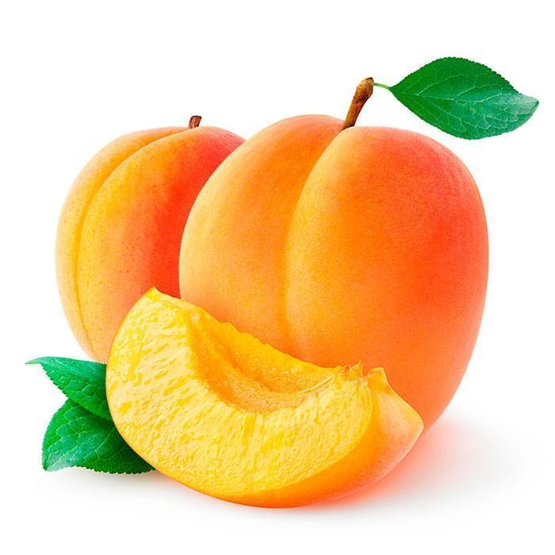

The most commonly grown fruit in Serbia.
Plum (Prunus subg. Prunus) is a subgenus of the genus Prunus from the rose family (Rosaceae).


Apricot or apricot (lat. Prunus armeniaca), also known by the name "apricot",
is a continental stone fruit that,belongs to the genus Prunus of the Rosaceae family.
Cherry (Prunus cerasus) is a woody angiosperm species, and the name for its fruits.
It belongs to the family Rosaceae.